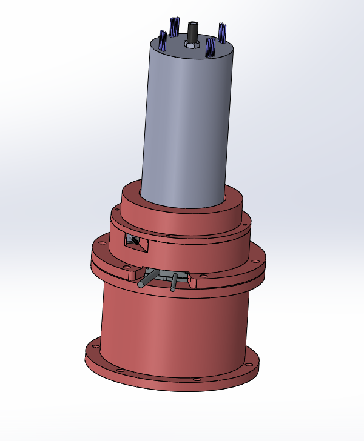
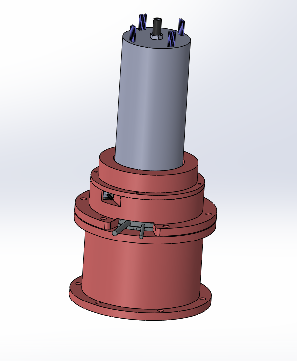

Group Project, Spring 2020

Industrial assembly robots are very popular nowadays, and it has been made obvious how robots can help assembly by increasing accuracy and reducing assembly time. SCARA (Selective Compliance Assembly Robot Arm) robots have been used for decades in the assembly of mechanical and electronic components in industrial settings. SCARA robots often have external cables for power, signal and pneumatic pressure. This is ensure that the robot is cheap to manufacture and assemble, as carrying these cables externally thought the joints increases complexity and requires additional parts, like slip rings. Howeve, with internal cabling these robots can be better protected from the environment and mechanical wear.
The starting point of the project was the design a housing for a SCARA robot shoulder joint, which would enable power, signals and pneumatic pressures to be carried internally. The joint should be allowed to freely rotate both in rapid movement and slow transfer under load. This solution would later on be used in the elbow and wrist joints. The task required us to no use any kind external cables or channels. It was clear from the beginning that this solution would require an electro-pneumatic slip-ring; either designed by us or purchased from a supplier, as carrying electricity and pneumatic pressure internally is not possible without one.
We looked into designing and manufacturing our own slip-ring, but these R&D and manufacturing costs became restrictive. We started designing a solution which would rely mostly on pre-made parts.

We decided to purchase the slip-ring from Senring, as they offered an easily customizable solution depending on the number of cables required. This however created an entirely new problem; height. The joint should be as low as possible, as the extra height will cause additional torque and increase the thickness of the robot arms. The slip-ring does not carry any force, but the height required us to make the housing as short as possible. The slip-ring was 192 mm high, so this created plenty of problems. After several design rounds, we managed to get the housing down to 144 mm, which was quite decent considering that the torque motor had an external diameter of 130 mm. In addition, we needed to include an encoder, two tapered roller bearings and three attachment plates.

 

Due to the Covid-19 situation, the manufacturing of the prototype was significantly delayed, as delivery times increased and finding affordable machining in Finland was next to impossible. We were also unable to test the prototype, but on paper the designed looked really good and we managed to get the parts and assemble the prototype before summer. If prototype testing would have been successful, it would have been possible to continue designing the elbow and wrist joints with similar solutions, ultimately leading to a fully functioning SCARA robot without external cables hanging around.